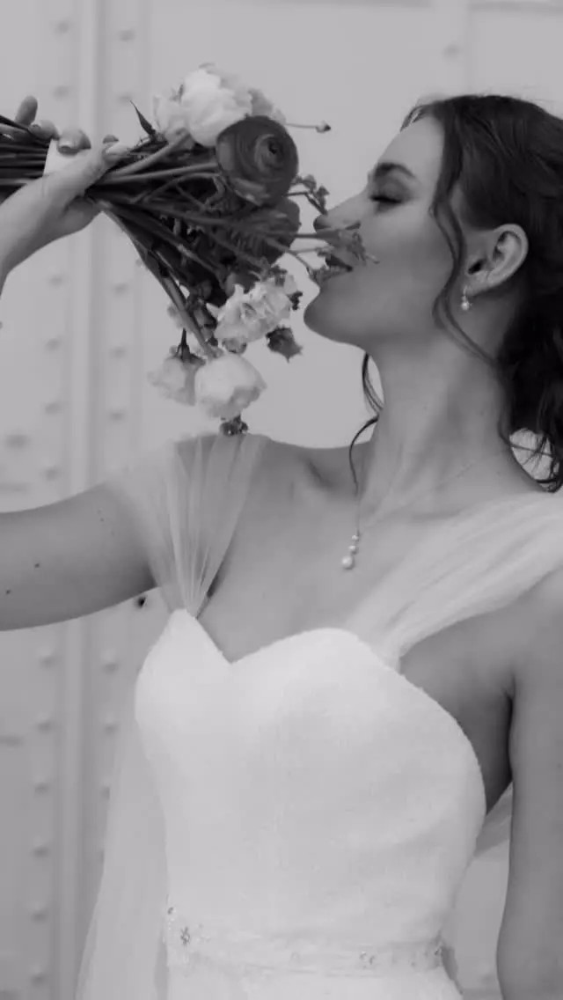
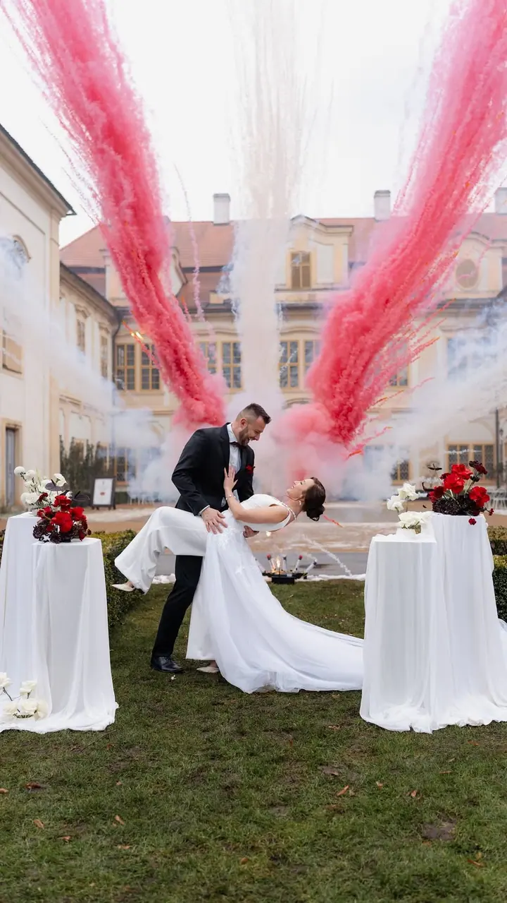
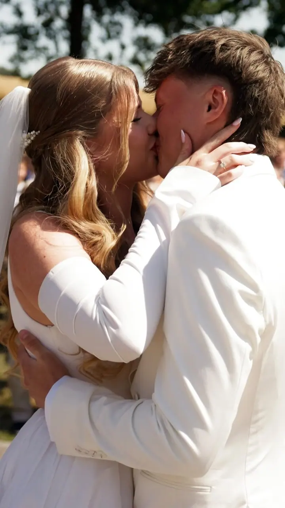
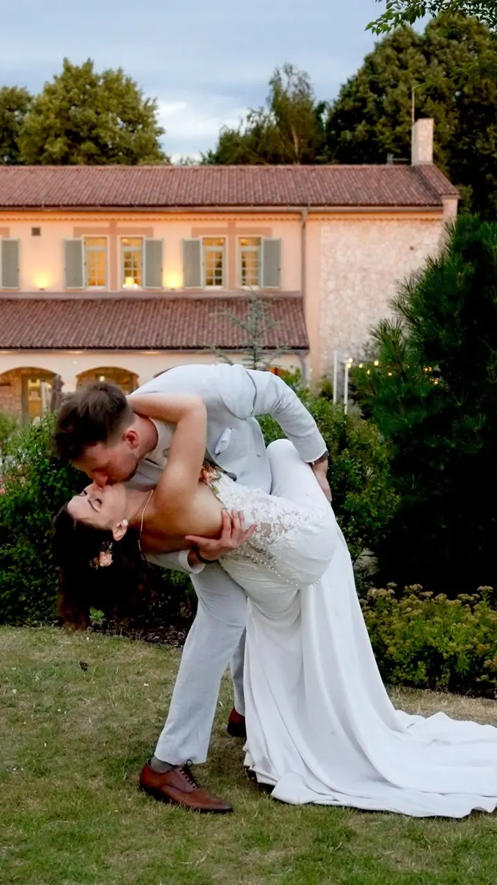
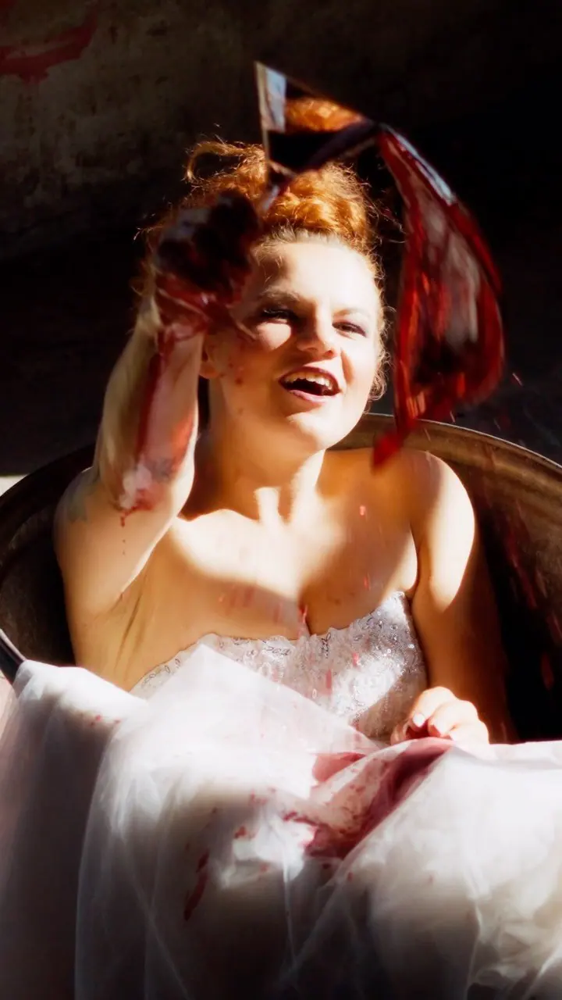
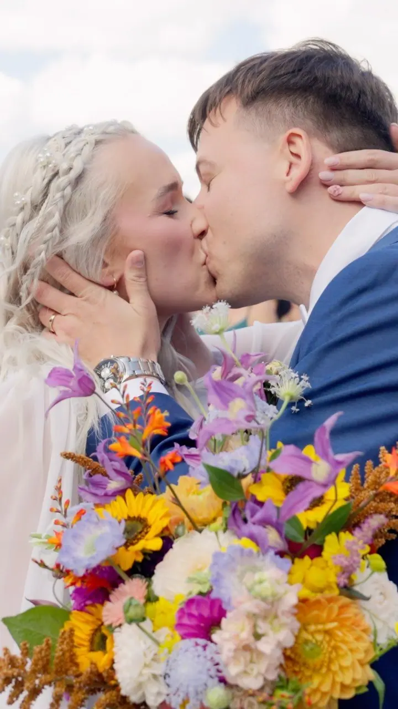
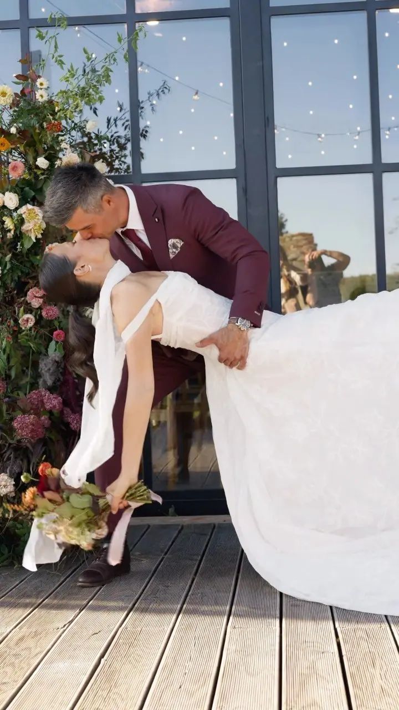
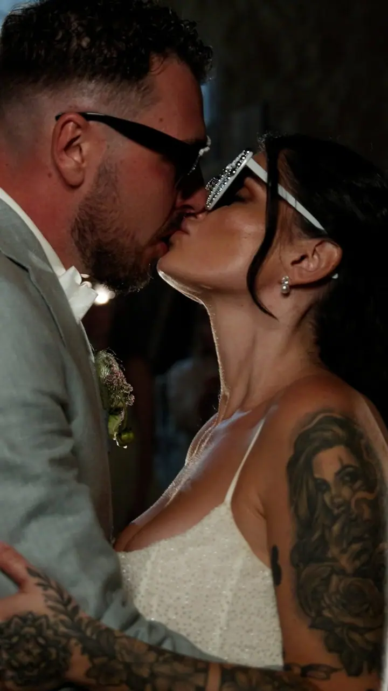

01 / 04
Svatební klip
Natáčím celý den, od příprav až po závěrečnou párty. Dostanete svatební klip dlouhý zhruba 4 až 6 minut a do 7 dnů od svatby krátký třicetivteřinový teaser.
Zeptat se na termín→







Svatební videa bez nudy a klišé
Zeptat se na termín →(01) Ahoj
Jmenuji se Zdeněk a natáčím svatební klipy, které mají duši . Na svatbě stojím kousek stranou, nenápadně pozoruji a hledám kouzlo v maličkostech . Základnu mám v Hradci Králové, ale za vaším „ano“ vyrazím kamkoliv .
507lidí sleduje mou práci na Instagramu
50příspěvků s fotkami a příběhy
(02) Co dělám
01 / 04
Natáčím celý den, od příprav až po závěrečnou párty. Dostanete svatební klip dlouhý zhruba 4 až 6 minut a do 7 dnů od svatby krátký třicetivteřinový teaser.
Zeptat se na termín→02 / 04
Delší svatební video kolem 30 minut se vzkazy od rodiny. Obsahuje celý obřad, proslovy i první tanec.
Zeptat se na termín→03 / 04
Sehraný tým fotografky a kameramana. K svatebnímu klipu nebo filmu dostanete zhruba 600 upravených fotografií, 50 vytištěných fotek a můžete si objednat i fotoknihu.
Zeptat se na termín→Dále nabízím
Standardně vám vše předám do 8 týdnů. Pokud nechcete čekat, připravím video do týdne od svatby.
↗(04) Postup
Od první zprávy po hotovou galerii.
Krok 1 z 4
Sejdeme se před svatbou, probereme průběh dne a to, na čem vám záleží. Díky tomu pak vím, kde stát a co nepropásnout.
Krok 2 z 4
Jsem s vámi od příprav až po závěrečnou párty. Natáčím nenápadně a nikoho nenaháním do póz.
Krok 3 z 4
Do týdne od svatby vám pošlu krátký třicetivteřinový teaser, abyste si den mohli připomenout hned.
Krok 4 z 4
Hotový klip nebo film dostanete do 8 týdnů na USB flash disku v dárkovém balení. Pokud spěcháte, je možné i expresní dodání do týdne.
Žádné pózy, jen opravdové emoce
(05) Za objektivem
Nejspíš se právě chystáte na jednu z nejdůležitějších událostí v životě. Já budu ten, kdo stojí kousek stranou a sleduje celý váš den širokoúhlým pohledem. Natáčím svatební klipy a filmy a ke každému přistupuji tak, aby měl svou duši.
Miluji opravdové emoce. Ne ty z reklamy na zubní pastu, ale ty skutečné: smích, nervozitu, objetí, ticho plné lásky. Nejsem typ, co žene lidi do póz. Raději tiše pozoruji a z toho, co se doopravdy děje, poskládám klip, který si pustíte i po letech a pořád vás bude hřát u srdce.
Nenabízím různé balíčky. Vždy s vámi budu od příprav až po závěrečnou párty, protože každá láska je jiná a každá si zaslouží být zachycená celá. Pokud chcete i fotky, přivedu sehranou fotografku.
Zdeněk
Zdeněk Jedlička · Svatební kameraman
Ne. Vždy s vámi budu celý den, od příprav až po závěrečnou párty. Vybíráte si jen, jestli chcete svatební klip, delší film, nebo spolupráci s fotografkou.
Krátký teaser do 7 dnů od svatby a všechno ostatní do 8 týdnů. Pokud nechcete čekat, nabízím expresní dodání do týdne od svatby.
Ano. Základnu mám v Hradci Králové, ale za vaším „ano“ vyrazím kamkoliv.
Ano, natáčím v sehraném týmu s fotografkou. Dostanete zhruba 600 upravených fotografií, 50 vytištěných fotek a můžete si objednat i fotoknihu. Pro cenovou nabídku mi stačí napsat.
(07) Kontakt
Napište pár vět o tom, co si představujete, a termín, který se vám hodí.
jedlicka.zdenek@seznam.cz